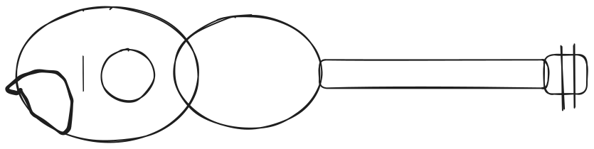

Maintiens la touche A pour jouer une note (diminue le temps).
Appuie sur la touche S pour moduler la note et ajouter du temps (max 2s).
(Optionnel) Appuie sur R pour réinitialiser le timer.
position arché
X
